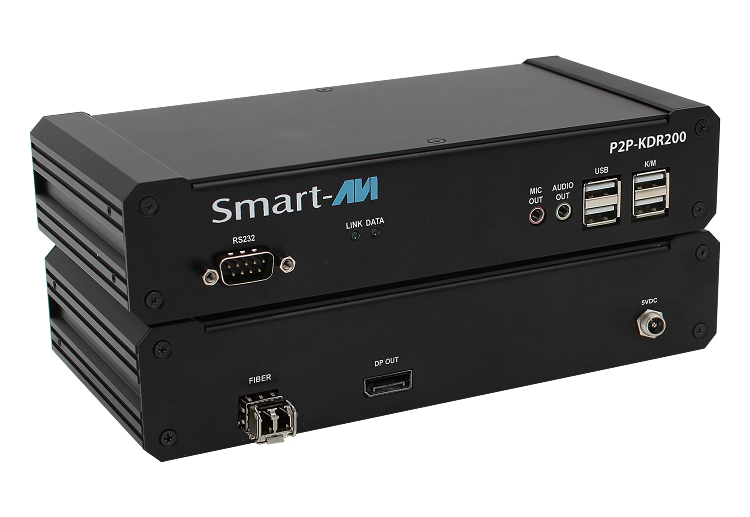

P2PKVM Series
High-Performance KVM-over-IP Extender & Matrix Solution
High-Performance KVM-over-IP Extender & Matrix Solution
Experience seamless, real-time remote access with the P2PKVM Series, a high-performance KVM-over-IP extender and matrix solution. Designed for mission-critical environments, it delivers ultra-low latency, high-resolution video, and secure connectivity over IP networks, ensuring efficient system control and flexibility.
Supporting resolutions up to 3840x2160 at 30Hz, the P2PKVM series is compatible with DVI-D, HDMI, and DisplayPort in both single and dual-head configurations. It also offers full USB KVM emulation and transparent USB 2.0 support with audio, providing fast, responsive control over gigabit networks via copper or fiber connections.
Universal Compatibility - DVI, HDMI, and DisplayPort
Universal Compatibility - DVI, HDMI, and DisplayPort
Universal Compatibility - DVI, HDMI, and DisplayPort
Universal Compatibility - DVI, HDMI, and DisplayPort
Universal Compatibility - DVI, HDMI, and DisplayPort
Universal Compatibility - DVI, HDMI, and DisplayPort
Universal Compatibility - DVI, HDMI, and DisplayPort
Universal Compatibility - DVI, HDMI, and DisplayPort
The P2PKVM Series Manager, powered by Savigate, offers IT administrators a centralized platform to efficiently manage KVM-over-IP extenders. Designed for ease of use, security, and scalability, it simplifies administration through a web-based GUI that provides full control and real-time visibility over connected KVM devices.
Centralized KVM Management – monitor, configure, and control from one dashboard
Seamless User Access Control – assign, modify, or revoke permissions
Real-Time Switching with Control View
Web-Based GUI – manage from any browser with no installation
The P2PKVM series offers an entry-level manager solution with hotkey switching and an intuitive OSD. Perfect for IT support and training environments, this solution allows users to view or control any server on the network easily.
Instant Switching with Hotkeys/p>
Real-Time Access for Support and Training
User-Friendly Interface – no complex setup
Scalable and Cost-Effective
Server Farms
Air Traffic Control
Enterprise IT
Government & Military
Control Rooms
Broadcast & Production
P2P-KVT300-XSingle-Port KVM over IP Switch with Single Port Power Switch |
P2P-KVR300-XSingle-Port KVM over IP Switch with Single Port Power Switch |
P2P-KVT300-MSingle-Port KVM over IP Switch with Single Port Power Switch |
P2P-KVR300-MSingle-Port KVM over IP Switch with Single Port Power Switch |
|
| Device Type | TX (HDMI) | RX (HDMI) | TX (HDMI) | RX (HDMI) |
| Max. Computers controlled | 1 | 1 | 256 | 256 |
| Number of Computers | 1 | 1 | 256 | 256 |
| Max Resolution | 4K @ 30Hz | 4K @ 30Hz | 4K @ 30Hz | 4K @ 30Hz |
| USB Support | USB 2.0 | USB 2.0 | USB 2.0 | USB 2.0 |
| Audio | 3.5mm Analog | 3.5mm Analog | 3.5mm Analog | 3.5mm Analog |
| RS-232 | Yes | Yes | Yes | Yes |
| KM Switching | - | - | OSD, Hotkey | OSD, Hotkey |
| Control Type | P2P Only | P2P Only | Matrix / Navigate | Matrix / SaviGate |